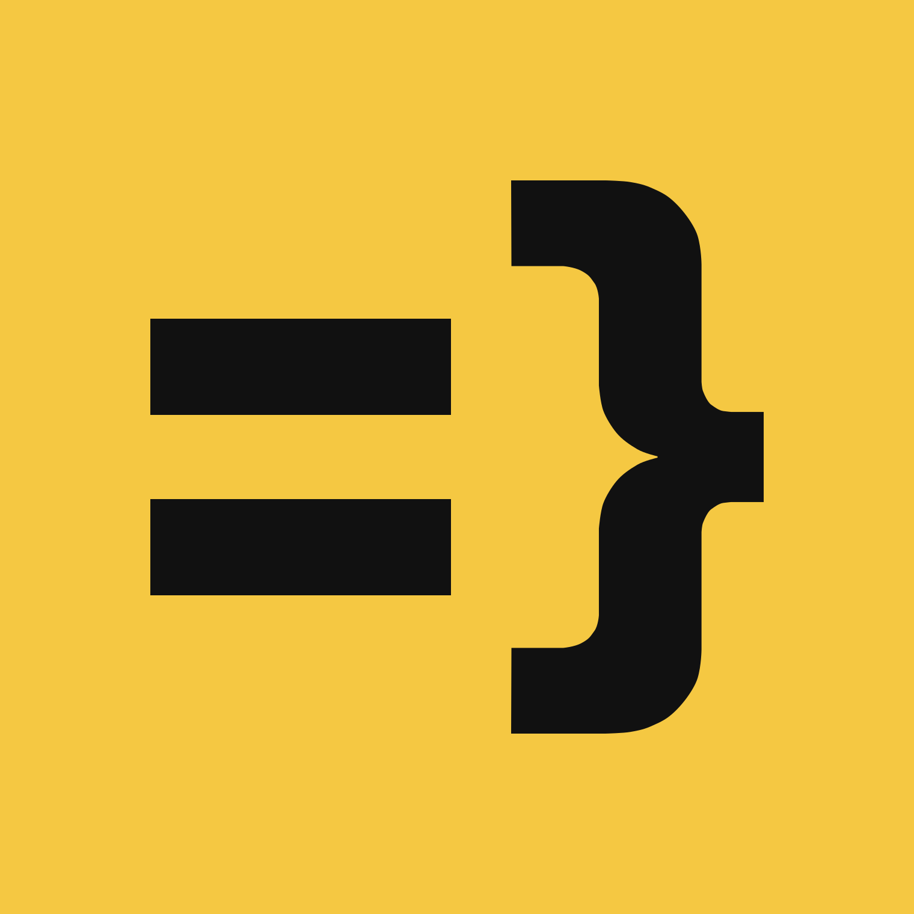
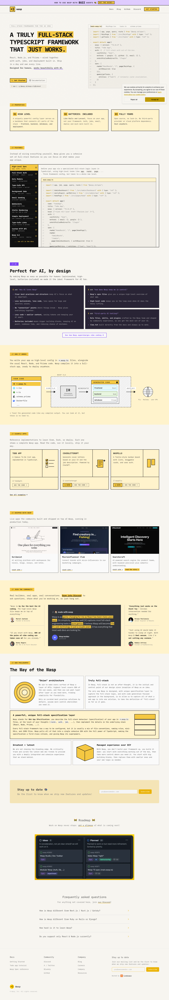

A truly full-stack TypeScript framework that just works.
Develop full-stack web apps without boilerplate.
https://wasp.sh
Single-page scope by pipeline design (see Pipeline.md) — every cross-page aggregation field (system components, cross-promo, CTA/heading frequency tables) is emitted empty per the extraction skill's own <3-page threshold rule, not a capture failure.
Benchmarked against Wasp's own design blog post (2026-07-13) — declared values corrected/added where the live capture diverged; see Tensions.

Source: _brand-extraction.json § palette, benchmarked 2026-08-16 against Wasp's design blog post, which states the system is "three colors, and that's it": Wasp Yellow, Ink Black, Blueprint Paper. Occurrence counts are null — the bundled single-page crawl captures CSS custom properties, not a per-element frequency walk, so these are role/usage judgments, not weighted counts.
Theme heading sizes (h1/h2 2rem, h3 1.3rem, h4 1rem, h5 .875rem, h6 .85rem) come from Docusaurus custom properties; the rendered hero H1 in the screenshot is visibly far larger, meaning page-specific CSS overrides the theme default in a way this pass couldn't capture as a token. Scale ratio left unset rather than computed from a token set known not to match what's on screen — see Tensions, T-scale.
2rem → 2rem → 1.3rem → 1.3rem/1rem → .875rem → .85rem, no consistent ratio (and the theme scale likely understates the real hero size — see Typography). Direct will need to decide whether the target adopts a modular scale.
Single SVG variant (gold-on-dark mark) captured via the <img> locator. The redesign will need monochrome / inverted / favicon-scale variants; direct should plan for that rather than assume they exist.
The site's own --ifm-color-primary token is #bf9900 (a desaturated,
Docusaurus-generated mustard used for link/hover states), while the brand's actual
signature gold — confirmed by both the design blog and the favicon/logo asset — is
#f5c842. The token layer exists but doesn't track the real brand color; direct should pick
one.
The design blog is explicit: Wasp Yellow, Ink Black, and Blueprint Paper are the entire palette. The live homepage also uses a violet accent (#7b42f5, the "AI" nav pill) and a dark surface (#292435, testimonial/AI panels) — neither is mentioned in the declared system. Direct needs to decide: deliberate exception worth keeping, or scope creep to cut.
The design blog names JetBrains Mono as the primary typeface, "backed by" IBM Plex Mono as fallback. The live page's captured styles show only IBM Plex Mono — JetBrains Mono doesn't appear to be loading anywhere on the homepage.
The design blog states this as a hard rule. The live border-width token is 1px, not the declared 2px, and the favicon/logo's own corner has a real radius (rx=300 of a 1520 viewBox) rather than a sharp 90° corner.
Mechanical detectors requiring cross-page or per-element occurrence data (T-radius-vocab, T-color-imbalance, T-cta-vocab, T-nav-conflict, T-tokens-unused's strict framework-default match) were skipped rather than fired on inferred data — see Coverage.
No gradients detected anywhere on the page — flat color throughout.
Base unit: 16px (1rem, single-unit rhythm — no wider spacing scale detected). Container max-width: 1140px.